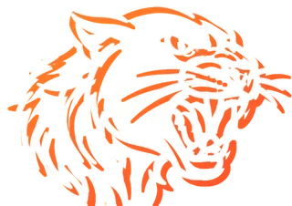
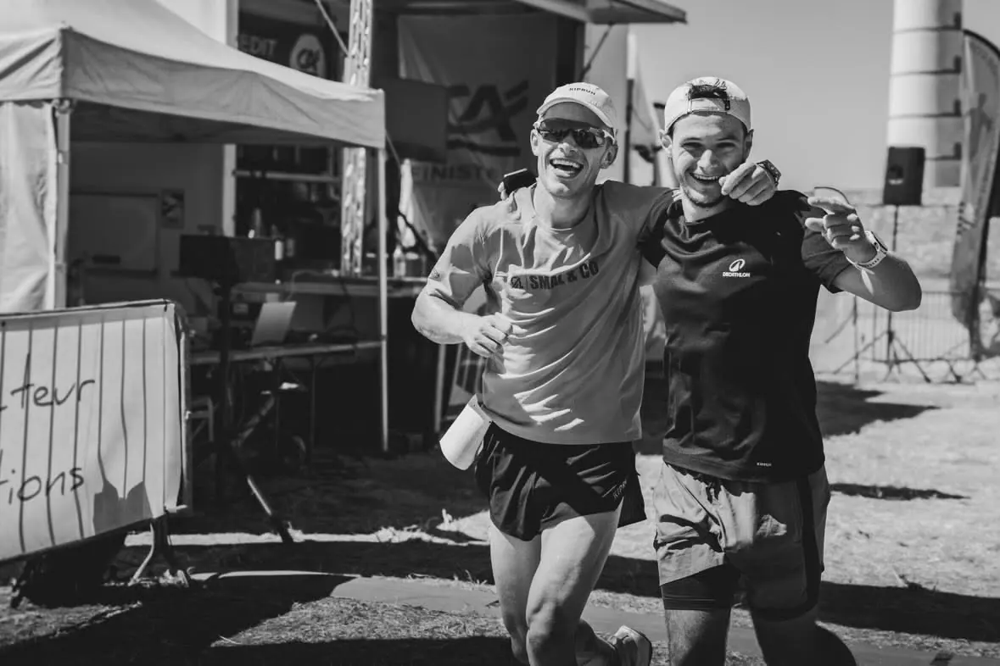
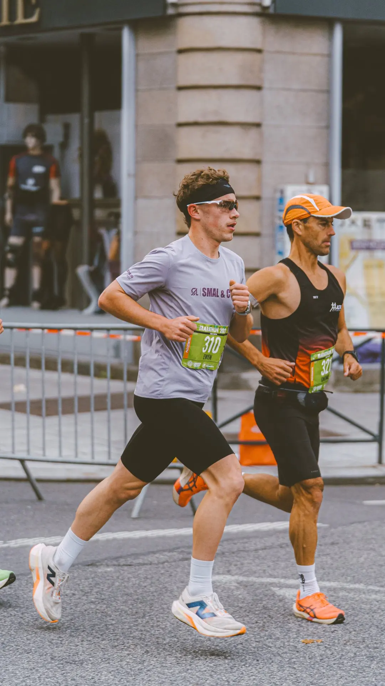
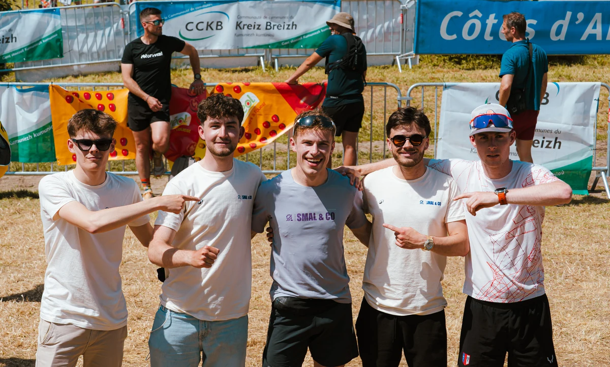
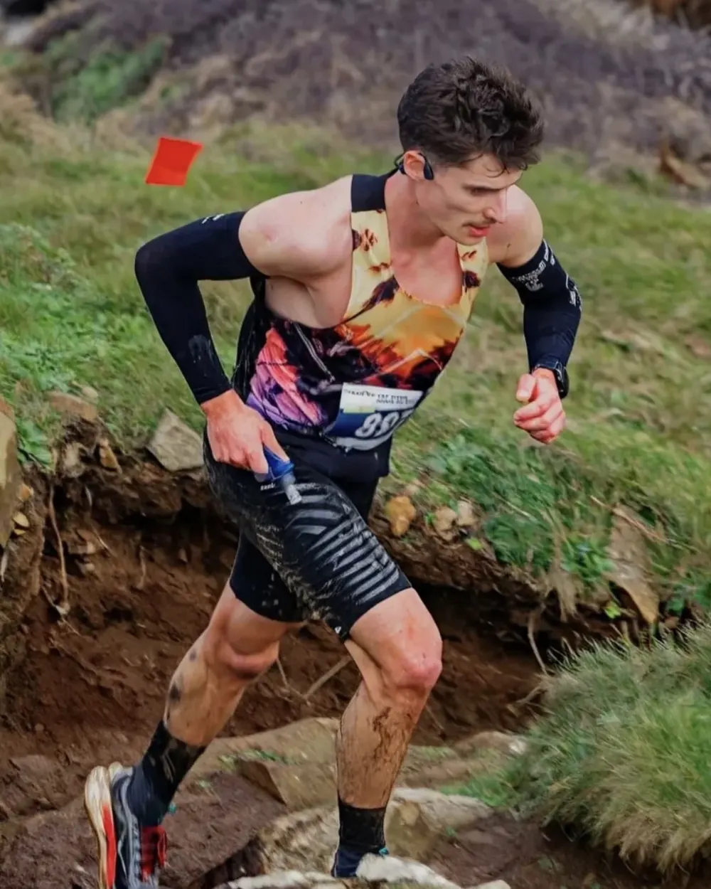
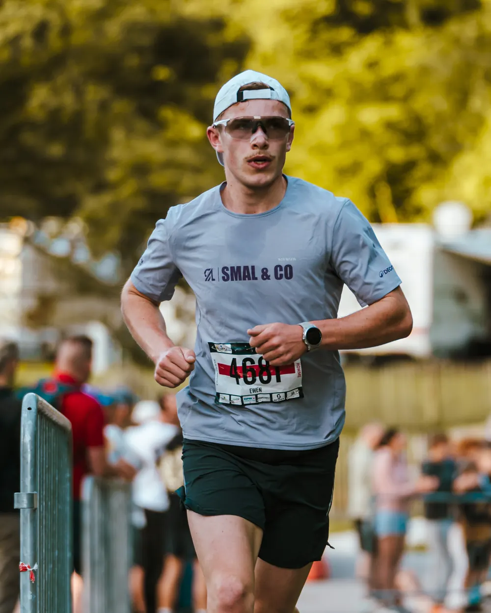
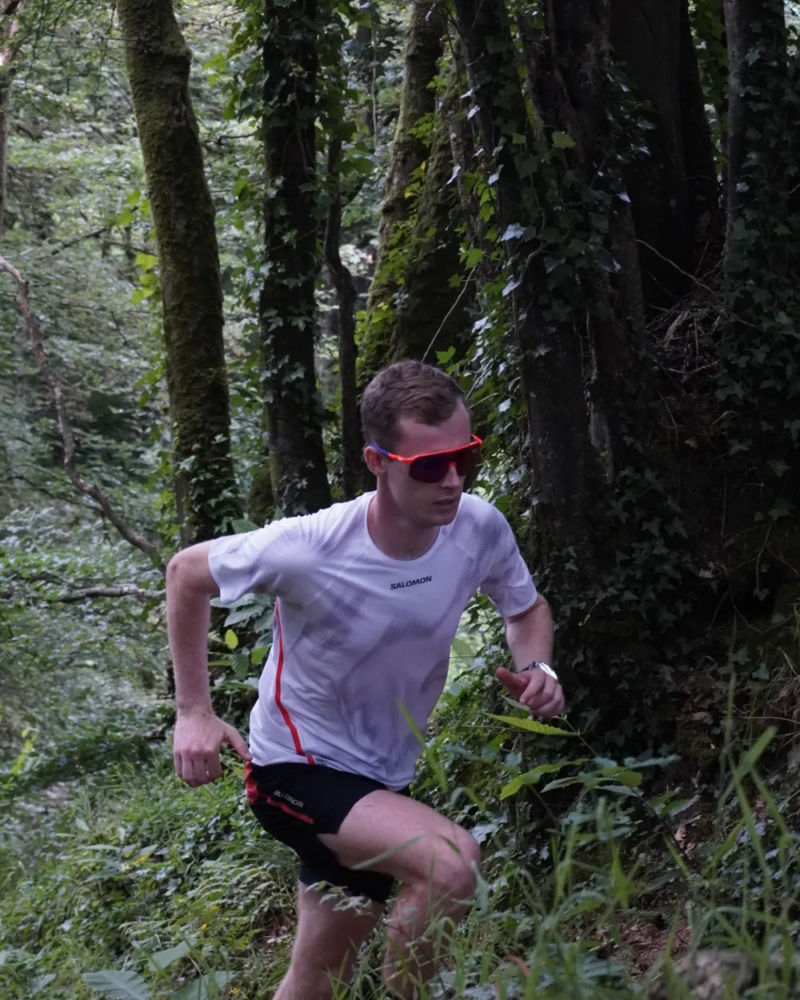
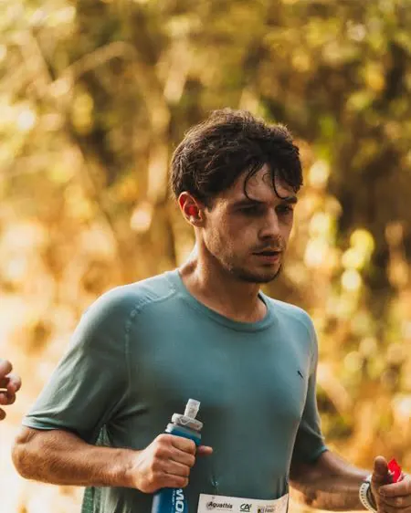
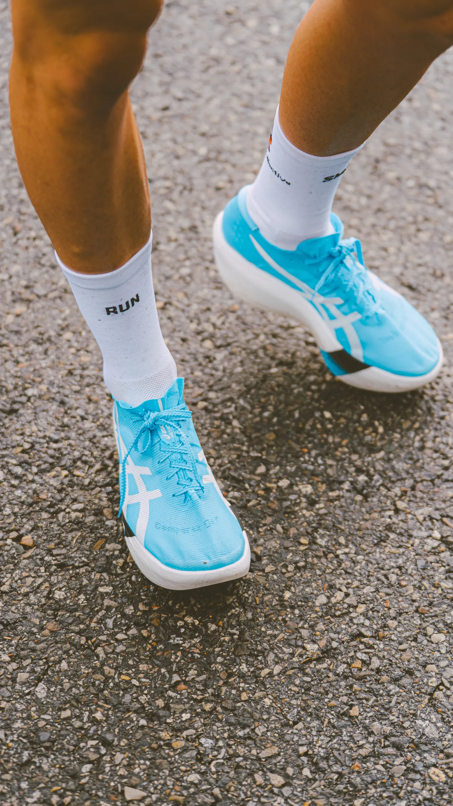

Pôle 02 · Running
Running
Aux sentiers côtiers bretons. Une section running engagée sur les courses régionales dans un esprit d’émulation et de cohésion.
Nos missions
Courir ensemble, sous les mêmes couleurs.
- Création
- Mai 2026, Guerlédan
- Saison 2026
- 1 coureur engagé sous nos couleurs
- Saison 2027
- Création du TEAM Running / Trail
Un pôle running qui se construit en parallèle du cyclisme, avec son propre suivi.
En 2026, un seul coureur a porté nos couleurs sur les courses. 2027 marque la vraie naissance du pôle : un TEAM complet, structuré et accompagné.
Saison 2026 · Réalisations & sorties marquantes
Nos premiers kilomètres
Les résultats présentés ici datent de la saison 2026, avec un seul coureur engagé sous nos couleurs.
Guerlédan
La naissance de la section : toute l’équipe au départ autour du lac de Guerlédan.
Rennes
Un coureur SMAL & CO prend le départ dans les rues de Rennes.
Sorties communes
Des entraînements partagés entre membres, sur route comme sur les sentiers bretons.




TEAM Running / Trail
Un TEAM, pas un club.
Nous créons le TEAM Running / Trail SMAL & CO : un collectif indépendant, porté par l’association. Ce n’est pas un club FFA.
Pourquoi un TEAM ? L’idée d’un club n’est pas écartée, mais nous voulons faire les choses dans l’ordre. Le format TEAM nous permet de poser des bases solides, de structurer notre collectif et de démarrer immédiatement avec des coureurs déjà engagés et licenciés.
2027 est notre saison fondatrice : un tremplin commun pour faire grandir le TEAM, développer l’association et offrir de la visibilité à notre partenaire.

- 01
Chacun garde son club
Chaque coureur conserve son club et sa licence.
- 02
La tenue SMAL & CO
Le TEAM court la majorité de ses épreuves en tenue SMAL & CO. Le maillot du club reste porté sur les compétitions officielles (championnats).
- 03
50 € par coureur
Chaque coureur adhère à SMAL & CO. Ces adhésions forment la trésorerie de départ qui finance les premières tenues.
- 04
2027, saison test
Un bilan avant 2028 pour décider : rester en TEAM ou étudier un club FFA.
Les coureurs
Un effectif resserré, un maillot.
Quatre coureurs du niveau régional au national. Pour notre première saison, chaque coureur bénéficie d’un suivi attentif et le groupe se soude avant de s’ouvrir plus largement en 2028.
-

Membre du TEAM 2027Lucas Tanné
- Niveau
- National
- Discipline
- Trail & route
- Palmarès
- Victoire · Grand Raid du Finistère 2024
-

Membre du TEAM 2027Ewen Premel
- Niveau
- National
- Discipline
- Trail & route
- Palmarès
- 2e · Trail de Guerlédan 2026
- 4e · Trail de l'Aber-Wrac'h 2026
- Marathon en 2 h 37
-

Membre du TEAM 2027Moran Bars
- Niveau
- Régional
- Discipline
- Trail & route
- Palmarès
- 1er Espoir · Thérèse Trail
- 3e / 450 · Trail du Bout du Monde, 11 km
-

Membre du TEAM 2027Lucas Marrec
- Niveau
- Régional
- Discipline
- Trail
- Objectif
- UTMB Val d'Aran 2027
-
Recrutement 2027
Place ouverte
Le recrutement n’est pas tout à fait clos : un ou deux coureurs peuvent encore rejoindre le TEAM pour compléter l’effectif 2027.
Nous écrire
Ambitions 2027
Ce que nous voulons faire.
Aucun de ces événements n’est encore programmé ni autorisé.
- Projet
Courir ensemble
Un programme de courses régionales en tenue SMAL & CO, puis des épreuves plus exigeantes selon le niveau de chacun. Calendrier à venir.
- Projet
Testing de marques
Des sessions de test de chaussures et d’équipements avec les marques distribuées par le partenaire, ouvertes à la communauté, en magasin ou sur le terrain.
- Projet
Sorties collectives et découverte
Des sorties running / trail ouvertes à tous, sur le modèle des social rides vélo.
- À étudier
Événement SMAL & CO running
Une course ou un trail chronométré organisé par l’association. À étudier : autorisations, sécurité, budget, bénévoles.
- Projet
Raconter la saison
Contenus photo et vidéo sur les courses, les athlètes et les partenaires : Reels, réseaux sociaux.
Ce qui nous rassemble
Les mêmes valeurs, sur le même terrain.
Run Aventure se présente comme un spécialiste du running, du trail et de l’outdoor, qui accompagne chaque coureur. C’est exactement ce que le TEAM veut incarner sur les courses.
- Run Aventure
L’expertise
Un conseil de spécialiste, analyse du pied et de la foulée, choix du bon matériel.
SMAL & COLa performance
Des coureurs de niveau régional à national qui progressent avec le bon équipement.
- Run Aventure
Tous les coureurs
Un accompagnement pour chacun, débutant ou confirmé.
SMAL & COLe collectif
Un TEAM à taille humaine et des sorties ouvertes à toute la communauté.
- Run Aventure
L’aventure
Des sorties running et des tests produits en magasin, des aventures à vivre ensemble.
SMAL & COL’audace
Créer pour oser : lancer un TEAM, organiser des sorties, imaginer des événements.
- Run Aventure
La proximité
Un magasin spécialiste au service de Brest et de sa périphérie.
SMAL & COL’ancrage
Une association brestoise qui porte les couleurs du Finistère sur les courses.
Éléments Run Aventure issus de runaventure.fr, page du magasin de Brest. Texte en nom seul, sans logo.

Partenariat
Devenir sponsor titre du TEAM Running / Trail
Comme Hobby Cycles pour le vélo, nous cherchons un sponsor titre pour le TEAM : un partenaire principal, spécialiste de la discipline.
- Cyclisme
- Partenaire référent : Hobby Cycles
- Running / Trail
- Place à pourvoir
Ce que nous proposons
Tenues et équipement
Conseil produits, accès au matériel, présence sur les tenues.
Soutien financier
Inscriptions, déplacements, équipements. Montants à définir ensemble.
Projets communs
Testings de marques en magasin, sorties, éventuelle course chronométrée à étudier.
Format proposé : un partenariat d’un an, la saison test 2027, avec un bilan partagé en fin de saison.
Fais-toi connaître & soutiens l’aventure
Suis les coulisses du pôle running et viens échanger avec nous sur nos réseaux officiels.